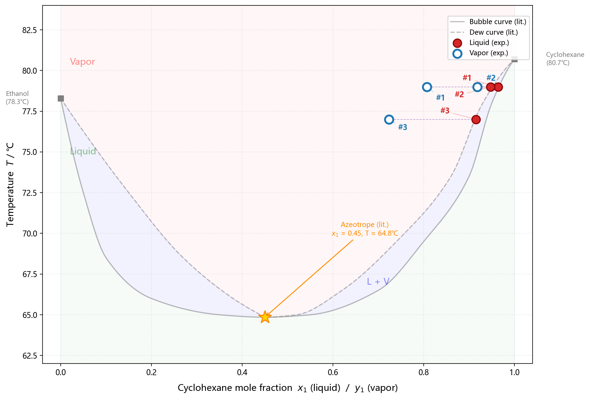

本实验采用简化操作方案，未配制 0.10~0.90 体积分数的环己烷-乙醇标准溶液系列（故无法绘制折光率-组成工作曲线），直接配制三组环己烷-乙醇混合溶液并测定其沸点及气、液相折光率。
（1）用 25 mL 胖肚移液管量取 30 mL 纯环己烷于干燥的沸点仪蒸馏瓶中，用 1 mL 刻度移液管加入 0.6 mL 无水乙醇。按图 1.2 安装沸点仪，检查温度计水银球位置（处于支管之下、高于电热丝约 2 cm），接通冷凝水。稳流电源调至约 1.9 A 加热至缓慢沸腾，待温度计读数稳定后维持 3~5 min 使体系达到平衡，记录沸点。期间将小球中凝聚的液体倾回烧瓶 3 次以加速平衡。停止加热，迅速用干燥长吸管从小槽取气相冷凝液、从侧管取液相样品，用阿贝折光仪分别测定折光率。剩余溶液倒入回收瓶。
（2）同上操作，分别加入 0.9 mL、1.5 mL 无水乙醇至 30 mL 环己烷中，测定各溶液的沸点及气、液相折光率。每次取样后立即测量折光率，防止样品挥发导致组成变化。
（3）测定纯环己烷折光率：在清洁干燥的阿贝折光仪棱镜面上滴加纯环己烷，重复测量，nD = 1.4064。
（4）测定纯水折光率（用于阿贝折光仪校准检查）：nD = 1.3327（文献值 nD20 = 1.3330，偏差 0.0003，表明折光仪在低折光率区工作正常）。
加热过程中溶液逐渐沸腾，冷凝管内可见回流液滴。加入乙醇量较少时（0.6 mL、0.9 mL），两溶液沸点相同（均为 79.0 ℃）；加入 1.5 mL 乙醇后沸点下降至 77.0 ℃，已低于两纯组分沸点，表明体系趋近最低恒沸点区域。折光率测量时气相样品挥发较快，需迅速读数。
异常 1：纯环己烷折光率偏低。实测纯环己烷 nD = 1.4064，与文献值（nD20 ≈ 1.4262）偏差约 0.02（相对偏差 1.4%）。水校准检查（实测 1.3327，文献 1.3330）表明折光仪在低折光率区偏差仅 0.0003，故可排除折光仪整体失调。推测环己烷样品可能含少量杂质，或折光仪在高折射率区存在非线性误差。
异常 2：液相折光率高于纯环己烷实测值。三组溶液的液相折光率（1.4225~1.4226）均高于纯环己烷实测值（1.4064），而加入乙醇（nD 较低）理应使折光率降低。此异常与预期方向相反。可能原因：（1）环己烷样品本身折光率已偏低（异常 1），加入少量乙醇后改变了体系的色散特性，使阿贝折光仪读数产生未知偏移；（2）液相样品在转移至折光仪过程中乙醇优先挥发，导致测得的折光率向环己烷方向偏移——但此解释要求乙醇浓度降低，与预期方向相同，无法解释为何折光率反而升高。此异常的根本原因未能明确，需在后续实验中通过配制整套标准溶液并严格控温来排查。
异常 3：气相折光率非单调变化。随乙醇加入量递增（0.6→0.9→1.5 mL），气相折光率呈 1.4137→1.4209→1.4083 的非单调变化，点 2 的折光率（1.4209）明显偏高。这与"乙醇含量增加、气相折光率应降低"的预期矛盾。可能原因：点 2 取样时冷凝液尚未达到平衡，或气相样品在转移至折光仪时挥发不均匀。建议在后续实验中对此点进行复测。
实验室温度：20 ℃（293.15 K）；大气压力：102 kPa。由于大气压力与标准压力（101.325 kPa）偏差仅约 0.7%，对各纯组分沸点的影响约 ±0.3 ℃，对本实验定性分析的影响可忽略，不做压力校正。
表 1 原始实验数据
| 编号 | Vcyc/mL | Vetoh/mL | 沸点/℃ | 液相 nD | 气相 nD |
|---|---|---|---|---|---|
| 1 | 30 | 0.6 | 79.0 | 1.4226 | 1.4137 |
| 2 | 30 | 0.9 | 79.0 | 1.4226 | 1.4209 |
| 3 | 30 | 1.5 | 77.0 | 1.4225 | 1.4083 |
由加入体积和纯组分密度计算物质的量和摩尔分数。环己烷：ρ = 0.779 g·mL−1，M = 84.16 g·mol−1；乙醇：ρ = 0.789 g·mL−1，M = 46.07 g·mol−1。
ncyc = (30 × 0.779) / 84.16 = 0.2777 mol（三次相同）
表 2 液相摩尔分数计算
| 编号 | Vetoh/mL | metoh/g | netoh/mol | xcyc |
|---|---|---|---|---|
| 1 | 0.6 | 0.4734 | 0.01028 | 0.9643 |
| 2 | 0.9 | 0.7101 | 0.01541 | 0.9474 |
| 3 | 1.5 | 1.1835 | 0.02569 | 0.9153 |
因未绘制折光率-组成工作曲线，气相组成仅能通过线性内插法粗略估算。分别采用两种端点方案进行计算，以评估估算的可靠性。
方案 A——文献端点值：ΔnD = 1.4262 − 1.3614 = 0.0648
ycyc = (nD,gas − 1.3614) / 0.0648
方案 B——混合端点值（纯乙醇用文献值，纯环己烷用实测值）：ΔnD = 1.4064 − 1.3614 = 0.0450
ycyc' = (nD,gas − 1.3614) / 0.0450
表 3 气相摩尔分数估算（两种方案对比）
| 编号 | nD,gas | 方案 A：ycyc | 方案 B：ycyc' |
|---|---|---|---|
| 1 | 1.4137 | 0.8071 | 1.162（>1，不合理） |
| 2 | 1.4209 | 0.9182 | 1.322（>1，不合理） |
| 3 | 1.4083 | 0.7238 | 1.042（>1，不合理） |
方案 B 中三组 ycyc' 全部 > 1，物理上不可接受。这说明实测纯环己烷 nD 值（1.4064）与三组溶液的气相 nD 值（1.4083~1.4209）之间缺乏自洽性——气相 nD 全部高于"纯环己烷"的实测值，在线性插值框架下无法给出合理的组成。这一矛盾进一步佐证了异常 2 和异常 3 的判断。
鉴于方案 B 失效，以下相图绘制中气相组成暂用方案 A 的估算值（以文献值替代实测值）。请注意，由此得到的 ycyc 值存在显著不确定度，仅供定性参考，不作为定量的气-液平衡数据。
以液相组成 xcyc、气相组成 ycyc（方案 A 值）为横坐标，沸点为纵坐标作 T-x-y 图。纯组分沸点采用文献值（乙醇 78.3 ℃，环己烷 80.7 ℃）作为端点参考。
图 1 环己烷(1)-乙醇(2)体系 T-x-y 相图（p = 102 kPa）

实测点 3 的沸点为 77.0 ℃，已低于纯乙醇沸点（78.3 ℃）和纯环己烷沸点（80.7 ℃），表明该体系存在最低恒沸点，与文献报道一致。
由于本实验三组数据集中于环己烷高浓度端（xcyc > 0.9），且气相组成估算存在较大不确定度，无法从实验曲线上读取恒沸温度和恒沸组成。文献值：恒沸温度约 64.9 ℃，恒沸组成 xcyc ≈ 0.45。现有实验数据不足以绘制完整的 T-x-y 相图，建议补充全组成范围（xcyc = 0~1）的测量点并先绘制折光率-组成工作曲线。
（1）在环己烷高浓度区（xcyc = 0.9153~0.9643），测定了三组环己烷-乙醇溶液的沸点和气、液相折光率。液相组成与沸点的对应关系：
xcyc = 0.9643 → T = 79.0 ℃；xcyc = 0.9474 → T = 79.0 ℃；xcyc = 0.9153 → T = 77.0 ℃
（2）在所有数据点中，气相环己烷摩尔分数（ycyc）均小于液相（xcyc），表明乙醇在气相中富集（乙醇更易挥发），符合该体系的文献规律。
（3）点 3 的沸点（77.0 ℃）已低于两纯组分沸点，证实环己烷-乙醇体系属于具有最低恒沸点的完全互溶双液系。
（4）因数据点偏少、未绘制工作曲线、且折光率数据存在内部不自洽，本实验相图仅为局部草图，无法确定恒沸温度和组成。后续实验需补充 11 个标准浓度点的全套数据。
待测溶液的浓度不需要十分精确计量，但仍需大致准确。理由：本实验最关键的量是平衡时气、液两相的实际组成，通过沸点仪取样后由折光率-组成工作曲线读出，而非依赖配制浓度。配制浓度仅用于在相图上获得合理的分布点，即使配制浓度存在一定偏差，最终气、液相组成仍由工作曲线确定，故配制精度不影响最终结果的准确性。但若配制浓度偏差过大，可能导致数据点在相图上分布不均匀、遗漏关键特征点（如恒沸点附近），影响相图的完整性和准确性。
小球的体积大小主要影响平衡建立速度和取样代表性，需在"足够样品量"和"快速响应"之间权衡：
（1）体积过小：收集的气相冷凝液不足，难以满足阿贝折光仪测量所需样品量（棱镜面需均匀铺展），且少量样品暴露于空气中挥发极快，组成易改变，测量误差大。
（2）体积过大：小球中积聚较多冷凝液，相当于从气相中移走了较多物质，可能破坏已建立的气-液平衡；冷凝液在球中驻留时间与体系温度/组成的漂移存在时间差，较早冷凝的液体不能代表当前平衡态的真实气相组成。
适中的小球体积应保证约 0.5 mL 冷凝液足够测量，同时尽可能小以利于快速达到新平衡。